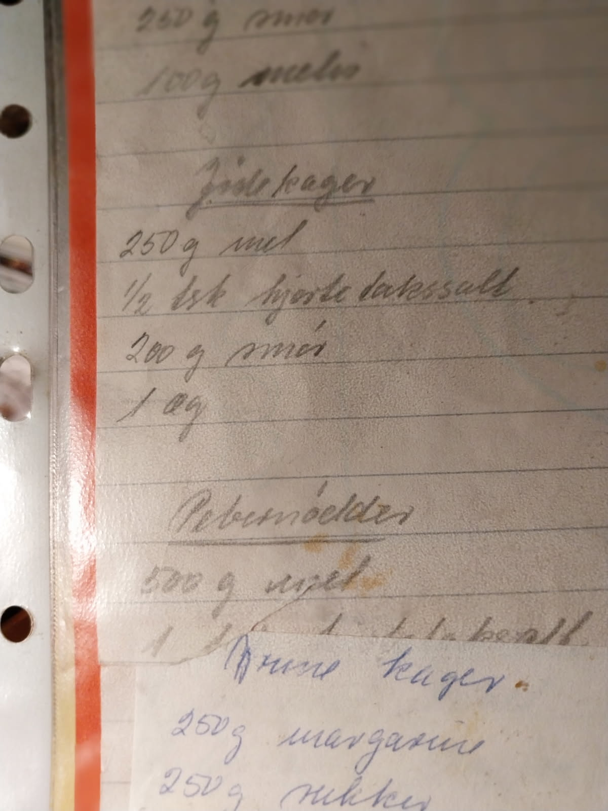

16 Bagning
17 Bagning
17.1 Koldhævede morgenboller
Goto opskriften, fordi den kan røres sammen aftenen i forvejen.
- 6 dl vand
- 25 g gær
- 15 gram akaciehonning
- 480 gram hvedemel
- 65 gram solsikkekerner
- 270 gram durummel
- 2 tsk salt
Rør gæren ud i vandet. Rør honningen ud i gærblandingen
Bland kerner og hvedemel.
Bland salt og durummel (tipo 00 fungerer også fint).
Rør durummel i gærblandingen. Rør hvedemel i dejen.
Rør sammen til dejen er jævn, klæg, og har en skinnende/våd overflade
Hæver tildækket to timer på køkkenbordet, eller natten over på køl.
Forvarm ovnen til 225 grader varmluft. Sæt bollerne på to plader, 8 på hver. Gør det med våde hænder.
Bages ca. 17 minutter, til de har en let gylden overflade.
Dette er en god basis opskrift. Der kan hældes flere/færre/andre kerner i. Eller der kan tilsættes havregryn eller grovere mel i - i så fald skal der formentlig lidt mere væske i, da havregryn eller groft mel suger mere væske.
17.2 fuglebrød
Almindelig brøddej. Og så formet på denne måde:  Gerne en lille rosin eller korender som øje.
Gerne en lille rosin eller korender som øje.
17.3 Finsk Brød
Fra - ja hun var vel en slags tante. På min fars side.
- 175 gram hvedemel
- 125 gram margarine
- 50 gram stødt melis
Pensles med æg, og drysses med perlesukker. Og bages til de er lysebrune.
Ja, det er altså det fulde omfang af tante Metas opskrift. Det er selvfølgelig udfordringen når man får fat i opskrifter fra erfarne husmødre. Heldigvis kan jeg trække på min mors praksis.
Margarinen - jeg ville jo nok vælge smør i stedet, smuldres i melet, sukker røres i. Og dejen hviler. Den rulles ud i stænger af 2½ cm tykkelse, og trykkes lidt flade. De skæres ud i stykker af 3-4 cm længde. Sådan lidt rhombeformede.
Temperaturen i ovnen skal være 200 grader. Og det tager en ti minutters tid før de er lysebrune.
17.4 Klejner - mors opskrift
Denne opskrift har så ikke gået så meget i arv. Endnu. Det er godt nok mors opskrift, men hun fik den af en ældre dame hun gik til knipling med en gang i tidernes morgen. Så den er ikke helt ung. Og nu er den så gået i arv fra mor til hendes sønner. Hvis min lillebror får taget sig sammen til at producere nogen nevøer og niecer, kan den gå i arv til dem.
Ingredienser:
- 188 g sukker
- 100 gram margarine
- 3 æg
- 2 spsk mælk
- Revet skal, og saft, af ½ citron
- 400 gram mel
Fremgangsmåde:
Pisk sukker og margarine (jeg bruger smør i stedet) sammen. Pisk æg, mælk og citron i. Ælt herefter mel i.
Rul dejen ud til ca. 3 millimeters tykkelse, kør klejnejernet over, vrid klejnerne og kog dem i palmin. Palminen skal op omkring de 180 grader. Stik enden af en tændstik i - når det begynder at syde og boble godt omkring den, er olien klar.
Jeg ved ikke om man havde en anden slags mel i gamle dage, eller om æggene var specielt små. Men jeg ender altid med at skulle have en del ekstra mel i. Og det var også min mors erfaring. Sidst kom der 128 ekstra gram mel i.
17.5 Brune kager - mors opskrift
Der er opskrifter der går i arv - og de er ofte knyttet til julen.
Dette er familiens opskrift på brune kager. Og den er faktisk af ældre dato. Fortællingen går på at min mors fastre, altså min morfars søstre, ikke ville udlevere den til min mormor. Det var familiens hemmelige brunkageopskrift, der stammede fra min oldemor på min morfars side, fra Langeland.
Meget hemmelig.
Så nu lægger jeg den på internettet…
- ½ kg margarine
- ½ kg sukker
- 1/4 kg sirup
Varmes op til kogepunktet, og tages af varmen.
- 15 gram potaske udrøres i 1 spsk koldt vand, og hældes i gryden. Der røres til det bruser op.
- 150 gram smuttede og hakkede mandler
- 50 gram sukat
- 3-5 tsk. kanel
- 3 tsk stødte nelliker
- 2 tsk ingefær
- 50 gram pomeransskal
Hældes i gryden, og der røres. Når det er kølet lidt af, æltes 1 kg hvedemel i massen. Når den er blevet så koldt at man kan arbejde med den, rulles dejen ud i pølser i en tykkelse der matcher den diameter man ønsker at kagerne skal have.
Rul pølserne ind i bagepapir, og læg dem i køleskabet. Roter pølserne, så de forbliver runde.
Skær dem tyndt ud (brug en god skarp brødkniv), og bag dem ved 175-180 grader i 8 minutter. Mors opskrift siger 6 minutter, det holdt ikke i min ovn.
Dette er den traumatiske julekage i vores familie. Dejen kan nemlig være ret drilsk, og smuldrer let når man skærer. Mange aftener har min mor stået og lagt dejstumper sammen i puslespil.
Det problem havde jeg ikke helt. Jeg ved ikke om det var begynderheld, eller fordi jeg ikke holdt mig helt til opskriften. Jeg brugte smør i stedet for margarine, baseret på en teori om at de nok ikke havde margarine på Langeland på min oldemors tid. Det kunne de nok have, blev født i 1889, og margarinen er fra sidste halvdel af 1800-tallet. Men hvis den vitterligt har gået i arv siden før hendes fødsel, så er det ret sandsynligt at den oprindeligt har brugt smør.
Anyway, det gik forbløffende smertefrit. Nu skal vi bare forsøge at få dem til at holde hele vejen til juleaften.
Et tip - vi har noget portvin stående. De kommer i paprør med en diameter på 72 mm. Det passer perfekt. Form dejen til pølser i ca. den rigtige størrelse, rul ind i bagepapir, og kom dem i rørene inden de er helt kolde. Så falder dejen lidt sammen, og fylder røret ud. Når de er blevet så kølige at dejen ikke flyder længere, lægges de i køleskabet.
17.6 Vanillekranse - mors opskrift
- 250 g mel
- 200 g smør
- 150 g sukker
- 60 g finthakkede mandler
- kornene fra ½ stang vanille
- 1/2 æg
Smørret smuldres i melet. Resten af de tørre ingredienser blandes i, og samles med ægget.
Extruderes på kødhakker, med stjernehul, og samles til kranse. En passende længde pølse til en krans er 8-9 cm. Eller ca. 4 fingres bredde, afhængig af hvor fede fingre man har. Bages ved 200 grader i 7-10 minutter.
Dette er mors standardopskrift, og standardportionsstørrelse. Jeg synes roligt man kan bage dobbelt portion. Så skal man heller ikke bøvle med halve æg.
Og så var vanillestænger dyre engang. De er sådan set ikke blevet billigere. Men man kan roligt hælde mere vanille i. Meget mere! En af de nærmeste dage bager jeg dobbelt portion, og regner med at bruge 4 stænger.
17.7 Rørt kage med marmelade
I serien “Metas opskrifter” er vi nået til kager.
Opskriften bærer præg af en noget mere beskeden husholdning end den gennemsnitlige danske i dag. - 3 hele æg - 250-400 gram sukker - 250 gram valsede byggryn - 250 gram rugsigtemel - 2 dl fløde eller mælk - 2 dl vand - 1 bagepulver (et brev, red.) - 1-2 kopper syltetøj eller marmelade
Slå æggene i en skål. Kom sukkeret deri, efter hvad man kan ofre og som det tiltrænges i forhold til syltetøjet der skal i. Pisk det godt sammen. Lad byggrynene gå en gang gennem kødmaskinen så får de en konsistens af mel. Bland gryn, mel og bagepulver sammen. Syltetøjet som kan være stikkelsbær, kirsebær blommer hvoraf stenene er taget ud, syltet græskar, grønne tomater eller lignende skåret småt, kommes i de røte æg, og blandes forsigtigt godt deri. Bagefter tilsættes det sammenblandede mel og mælken skiftevis hvorefter dejgen fyldes i en velsmurt form og bages 3/4 time. Frugtstykkerne i kagen virker som rosiner og sukat, og fugtigheden fra syltetøjet bevirker, at kagen ikke bliver tør. Den er bedst når den har stået et par dage før den spises.
Meta har noteret, at opskriften er fra Familie-Journalen.
17.8 Japanske boller
Jeg har et par gode bolle-opskrifter i kogebogen. Den her fx. Men forleden faldt jeg over en anden. Den baserer sig angiveligt på en eller anden japansk teknik. Og kaldes Tang-Zhong. Konceptet er at der først koges en jævning af dele af melet og væsken. Det skulle gøre det muligt at holde bedre på fugten i bollen eller brødet, og betyde at bagværket er friskt, saftigt og lækker i op til en uge.
Det lever den dog ikke helt op til. De 20 boller der kom ud af opskriften, var væk allerede tre dage efter de blev bagt. For selv om de ikke var så lækre efter tre dage, som de var da de kom ud af ovnen, var de stadig bedre end en standard brioche efter tre timer.
Ingredienser
- 6 dl mælk
- 800 gram mel
- 25 gram gær
- ½ tsk salt
- 4 spsk sukker
- 1 æg
- 150 gram smør.
Fremgangsmåde
Kog jævning af 40 gram mel og 2 dl mel. Rør det godt sammen i en kasserolle, og bring det i kog - rør godt undervejs. Det bliver tykt! Lun 4 dl mælk, og rør gæren ud. Lad jævningen køle af, og rør den sammen med alle andre ingredienser end smørret. Tilsæt smørret i små stykker, og rør videre til dejen slipper skålen. Vej bollerne af i portioner af ca. 80 gram, form dem til boller og placer dem på bagepladen. Lad bollerne hæve 1½ time under et viskestykke. Pensl bollerne (jeg bruger mælk eller æg), og bag dem ved 200 grader i 12-15 minutter.
17.9 Fastelavnsboller
Forstanderindens (forbedrede) fastelavnsboller.
Dejen
100 gram smør, smeltet 2 dl lun mælk (gerne sødmælk) 25 gram gær 50 gram rørsukker 1 tsk salt 1 æg 1/ 2 kilo hvedemel Gæren røres ud i mælken, sukker, salt og smør, som ikke må være alt for varmt, tilsættes. Melet æltes i lidt ad gangen. Hold lidt tilbage, dejen skal være blød og spændstig, ikke hård og tør. Dejen hæver til ca. dobbelt størrelse under et viskestykke. Det tager en god times tid i et lunt køkken.
Mens dejen hæver, laver man cremen.
Cremen
2,5 dl fløde 2,5 dl sødmælk (jo!) 100 gram sukker 1 stang vanilje 6 æggeblommer 30 gram maizena Æggeblommerne piskes sammen med sukker, maizena og kornene fra vaniljestangen. Mælk og fløde koges op sammen med den tomme vaniljestang. Når blandingen koger, hældes den i æggemassen. Cremen skal være tyk som en solid bearnaisecreme, og det bliver den næppe af at hælde den kogende fløde over æggeblommerne, så hæld massen tilbage i gryden og kog den op. Rør som besat imens. Hvis den klumper, kan den reddes med en elpisker. Køl cremen af. Hvis man hælder den i en skål eller bøtte, køler den hurtigere, end hvis den bliver stående i gryden.
Jeg synes, det er lækkert også at komme remonce i - lidt til den vamle side, men klart lækkert, selv om det ikke indgår i den oprindelige opskrift. Man kan eventuelt halvere opskriften på remonce og lave halvdelen med og halvdelen uden og lave sammenlignende studier.
Remoncen
100 gram marcipan 100 gram rørsukker 100 gram smør Den oprindelige opskrift foreslår, at man nu bare ruller dejen ud, men jeg synes, den bliver endnu bedre, hvis man ruller smør i den (men hvis du bliver livstræt bare ved tanken, så spring over og gå direkte til udrulningen - de smager godt uden, men endnu bedre med).
Smør i dejen
100 gram blødt smør Dejen rulles ud til et rektangel, ca. 40 gange 50 cm. Smør smørret på, fold dejen sammen, først på langs og så på tværs, så den ligger i fire lag (som du ville folde en vaskeklud).
Rul dejen ud igen, så den er så tynd som mulig, optimalt 30 gange 60 cm, realistisk nok lidt mindre. Brug så lidt mel som muligt, men nok til at dejen ikke hænger fast i alt, og at du får et hjerteslag af raseri.
Dejen skæres i stykker på 10 gange 10 cm.
Hvis du ikke fik rullet dejen tyndt nok, kan du eventuelt lige rulle hvert stykke lidt ekstra.
Læg en pæn klat creme på hvert stykke - og en skefuld remonce, hvis du er til den slags. Fold bollerne ved først at klemme de fire spidser sammen, så siderne. Vær omhyggelig.
Lad de små pakker hæve ca. 20 minutter.
Pensles med æg.
Bages ved 225 grader i ca. 10-12 min. De skal være smukt brune, men ikke hårde.
Chokoladen
100 gram mørk chokolade ½ dl fløde Smelt chokoladen, kom fløde i. Den må godt være ret tyk. Når bollerne er kølet lidt af, pensles de med chokoladen.
Man kan også fylde bollerne med flødeskum.
De skal være HELT kolde, ellers smelter fløden.
Hvis man har en sprøjtetylle, laver man et lille hul og sprøjter det ind i bollen. Ellers skærer man over og lægger sammen. Har man creme tilovers, som man ikke fik mast ind i bollerne, kan man også lave konditorcreme, hvor man blander flødeskum og cremen (pisk den først, så den er helt glat). Det smager også godt i fastelavnsboller.
Spiser man mere end tre på en eftermiddag, har man svært ved at spise aftensmad.
17.10 Mørdej
Standard mørdej. Den er god.
- 75 g blødt smør
- 50 g flormelis
- 1⁄2 sammenpisket æg
- 10 g mandelmel
- 125 g hvedemel
- 1 lille nip salt
Rør smør og sukker blødt med elpiskeren. Tilsæt ægget, og pisk det ind.
Tilsæt dernæst mel og salt. Når dejen hænger sammen stopper du med at røre, og samler dejen med hænderne.
Den vil være lettere at arbejde med hvis den får en tur i køleskabet først.
17.11 Jordnødde-chokolade småkager
Eller vel egentlig cookies.
Ingredienser:
- 250 gram smooth jordnøddesmør
- 100 gram sukker (gerne noget lys muscovado sukker
- 80 gram mørk chokolade
- 1 tsk vanillesukker
- 1 æg
- Et nip salt
Procedure
Rør æg og sukker sammen til æggesnaps. Tilsæt resten af ingredienserne (bortset fra chokoladen), og rør sammen til dejen er homogen. Hak chokoladen og vend den i dejen. Tril dejen ud i 12 kugler, læg dem på bagepladen (kom noget bagepapir på først) og tryk dem flade ~ ½ cm tykkelse. Som med de fleste andre småkager flyder de ud, så giv dem god plads på pladen. Bag dem i en forvarmet ovn (160 grader) i 25-30 minutter. De er fine efter 20, men ret bløde. Som for alle andre småkager gælder det at de bliver hårdere når de køler af (fedtstoffet bliver ganske enkelt stivere).
Opskriften er nappet fra Sabine Murati. Man kan med fordel besøge hendes hjemmeside, for der er flere og bedre opskrifter end jeg har her. Den er dog justeret lidt. Kemikeren her synes ikke der er nogen grund til at bruge himalaya-salt. Himalaya salt er grundlæggende snavset salt, og ethvert postulat om helsebringende effekter er det vi med et fagudtryk kalder for “vrøvl”. Og hvis man virkelig er bekymret for økologi og sådan noget, så bør man måske også overveje om man bør bruge salt der er blevet transportet 6.900 kilometer, for at nå frem til køkkenet i Rødovre. Eller om man kunne klare sig med noget der er transporteret 358 kilometer fra Mariager Fjord. Jeg har også erstattet kokos-sukkeret med almindeligt sukker. Hvis vi godt vil tænke lidt over klima og den slags, tror jeg også almindeligt sukker fra Lolland sviner en del mindre, end kokossukker der skal tranporteres fra Indonesien…
Nåja, de smagte godt. Men næste gang lader jeg være med at gå efter 80% chokolade. Det var for bittert.
17.12 Abrikostærte
Der skal bruges en portion mørdej. Rul dejen ud mellem to stykker bagepapir. Den skal være cirkelformet, og passe til en tærteform - min er 24 cm i diameter.
Løft dejen over i formen, og tryk den af i kanterne. Prik dejen med en gaffel. Eller sådan et hjul med pigge.
Så skal der fyld i!
- 14 friske abrikoser i kvarte
- saft af 1/2 citron
- 2-3 tsk amaretto
- 1 stang vanilje
- 150 g sukker
- 3 spsk. maizena
Vask og kvarter abrikoserne. Læg dem i en skål og vend dem med citrosaft og amaretto. Det er tilladt at smage på den inden, så du er sikker på at den ikke er blevet dårlig.
Flæk vanillestangen og fordel kornene i sukkert. Bland vanillesukker og maizena i en separat skål.
Saml det hele i en skål, og bred fyldet ud i tærtebunden.
Bag dyret i 20 minutter ved 220°C, skru ned til 190°C og bag videre i 30-40 minutter. Det er helt fint hvis abrikoserne tager lidt farve.
17.13 Pebernødder - mors opskrift
Pebernødder. Det er nok min foretrukne julesmåkage. Altså i den udgave som min mor laver den. Dem man køber i supermarkedet er vist lavet på samme dej som deres brunkager. Den er ærligt talt lidt kedelig. Men mors! De er gode.
Opskriften har været i familien i nogen år, men er vist ikke den ældste vi har. Den stammer vistnok fra mormors kogebog, og er derfor fra kort efter besættelsen. Så den er ikke nødvendigvis ret meget mere end 70-75 år gammel.
Man tager:
- 500 g hvedemel
- 250 g sukker
- 1 tsk hortetakssalt
- 1 toppet tsk kanel
- 1 toppet tsk ingefær
- 1 toppet tsk kardemomme
- 1/4 tsk hvid peber
- 125 gram smør
- Revet skal af en citron
- 2 æg
Først nuldre smørret ud i melet. Mor brugte vist oprindeligt margarine. Jeg er ikke helt sikker på at det er sundere end smør. Så her i huset er det altså smør. Sukkeret blandes med hjortetakssaltet, krydderierne og citronskallen, og blandes i mel/smør blandingen.
Dejen samles med to sammenpiskede æg. Det er utroligt hårdt arbejde og tager en del længere tid end man lige tror. Jeg plejer at lave af to kilo mel, altså firedobbelt portion, og det gik lidt lettere da jeg i år (2017) skruede mængden af æg op fra 8 til 9.
Dejen trilles i små kugler. Sådan ca. et par centimeter i diameter, afhængig af tålmodighed, og hvor store nødder man ønsker sig til jul. Bages i ca. 12 minutter ved 180 grader. I min ovn skal de have lidt længere. Og så spreder der sig en liflig duft af herretoilet i hele køkkenet. Hjortetakssalt er ammoniumhydrogencarbonat. Så under bagningen frigives der ammnoniak. Luft ud hvis det bliver et problem, nødderne kommer ikke til at smage af det.
17.14 Kagefigurer
Normalt laver jeg kagefigurer af en brunkagelignende dej. Men jeg kunne godt tænke mig en lysere udgave. Og gerne en der er mere robust i formen når den bages.
The Decorated Cookie har en opskrift, der ikke er så ringe endda. Men som selvfølgelig skal oversættes til fornuftige SI-enheder. Og justeres lidt.
- 225 gram smør
- 115 gram flormelis
- 1 æg
- 1 tsk vanillepasta. Eller en spsk vanillesukker
- 300 gram mel
- ½ tsk fint salt
Der kan suppleres med mandelekstrakt, eller andre smagsgivere. 1-2 teskeer. Men det er en smagssag.
Sigt salt og mel sammen.
Rør smør og sukker sammen til blandingen er luftig. Det tager en krig. Tilsæt ægget og rør godt. Vanillepasta og eventuelle andre smagsgivere tilsættes. Rør melblandingen i lidt af gangen.
Afkøl dejen i køleskab et par timer. Gerne i en frysepose hvor den er trykket flad, det sparer tid når den skal rulles ud.
Rul dejen ud til ca. 5 millimeters tykkelse, stik figurerne ud og bag dem i en forvarmet ovn ved 190 grader i 12-14 minutter. Eller i min ovn nok snarere 11-12 minutter ved 200 grader. Det afhænger af størrelsen, men de er færdige når kanterne er blevet lysebrune.
17.15 Chokolade sifon kage
Det lykkedes ikke at finde majsjuice. Thaiforretningerne nede ved Istedgade har mange andre interessante produkter, men ikke majsjuice.
Så i stedet lavede jeg denne:
- 110 g mørk chokolade
- 5 mindre æg
- 3 spsk mel
- 6 spsk sukker
Chokoladen smeltes, og resten røres i. Det hele filtreres og hældes på sifonen. To kapsler lattergas tilsættes. Den anden blev ikke tømt helt i sifonen.
Der omrystes, og sprøjtes i ramekinerne (teflonbelagte), og en ramekin af gangen gives 30-45 sekunder i mikroovnen ved 900 W. Bemærk at ramekinen ikke er specielt varm efter første omgang. Men efter anden er den varmet op, tredie gang den har været i ovnen er den varm, selv for en kemiker. Hold godt øje med kagen i ovnen. Den får hurtigt for meget.
Det er ikke sundt, men det smager godt, og så her det stor nørdværdi. Opskriften er tyvstjålet fra: http://projects.washingtonpost.com/recipes/2010/12/01/30-second-chocolate-cake/ med lette modificeringer.
http://projects.washingtonpost.com/recipes/2010/12/01/30-second-chocolate-cake/
17.16 Sandkage
½ pund margarine røres med ½ pund stødt melis. Der røres fem æggeblommer i. og ½ pund mel. 5 stift piskede æggehvider vendes i. En af metas opskrifter
17.17 Verdens bedste kringle
Opskriften er tyvstjålet fra Politiken. Men den er på prosaform, og det er lidt bøvlet når man skal fremstille den. Oprindeligt er det den Søren Ryge gjorde kendt.
Dej:
- 50 g gær
- 1 kop lunkent vand
- Lidt salt
- 3 spsk sukker
- 3 æg
- 330 g margarine
- 450 g mel
Remonce:
- 225 g sukker
- 225 g margarine
- Kardemomme eller kanel
I øvrigt:
- Rosiner, perlesukker og hakkede nødder.
Fremgangsmåde:
Gæren smuldres ud i vandet, og sukker samt æg tilsættes. Margarinen skæres i stykker og smuldres i. Skålen sættes lunt og gærer i en halv time. Mel tilsættes og der æltes. Den oprindelige opskrift taler om at bruge fingrene og noget om erfaring og den slags. Det er lidt Søren Ryge agtigt, men det giver god mening. Margarinen behøver ikke at blive helt fordelt. Dejen hæver mindst en time, og røres ud til et 50-70 cm. langt stykke, højest 3 mm tykt. Der foldes og rulles, gentagne gange, tilsæt evt. ekstra mel. Dejen skæresi 4 stykker, ca. 15 cm brede. Remoncen fremstilles:; Sukker og margarine, og krydderi, varmes i gryde til den er tyktflydende. Remoncen hældes ud på de fire stænger, der hældes rigeligt rosiner på, og dejen foldes sammen. Kringlerne løftes over i en bradepande, og pensles med æg. Der efterhæves i en halv time. Der pensles med æg, og drysses med sukker og hakkede nødder Bages i forvarmet ovn. Start ved 225 grader og sæt ned til 200 grader. Samlet bagetid 14-16 minutter.
17.18 Baba au ruhm
https://www.dr.dk/mad/opskrift/baba-au-ruhm
17.19 En god ung mand - chokoladedessert
Regeringen har meget på samvittigheden. Men det frankofile madprogram på Radio 247, Croque Monsieur var nok stoppet med Master Fatmans død under alle omstændigheder.
Det er her jeg har opskriften fra. Jeg tillader mig at stjæle den ret direkte - det er trods alt en standardopskrift af ældre dato fra det franske køkken.
Dér hedder den “Un bon jeune homme”. Og her i køkkenet kan vi godt lide gode unge mænd. Så længe de enten tier stille, eller er gamle nok til at de ikke er ulidelige at høre på.
Man tager:
- 7 dl mælk
- 50 gram sukker
- 175 god mørk chokolade, sådan en 65% sag
Og så gør man følgende:
Mælken hældes i en tykbundet gryde, sammen med sukkeret, og bringes langsomt i kog på mellemvarme. Mens man venter på at den kommer i kog, hakkes chokoladen groft. Den tilsættes når mælken koger. Og så røres der mens blandingen simrer ved lav varme. I 45 minutter. Det starter som varm chokolade, men efterhånden som vandet fordamper, cremer chokoladen blandingen, og det ender med at være en relativt tyk creme. Gryner cremen får den en omgang med stavblenderen. Derefter hældes cremen i 4 ramekiner, og sættes på køl til den er kold. Server evt med flødeskum eller en kold creme anglaise.
17.20 Langtidshævede brød
Indlæg fera 23. marts 2020 - hvor pesten rasede…
Zombie-apokalypsen er lige rundt om hjørnet. Om en måned finder vi ud af at alle de der blev “raske” efter Corona/Covid19/Kinesisk Influenza, forvandles til hjerneædende zombier.
Så vi kan lige så godt få sat en surdej over, så vi kan bage brød når nationen løber tør for gær.
Indtil da, her er opskriften på to lækre brød bagt med minimale mængder gær.
- 5 g gær
- 1 tsk sukker
- 4 dl lunkent vand
- 450 g mel
- 1 tsk salt
Rør gær og sukker ud i vandet. Tilsæt mel og rør til det er blandet godt op til en jævn konsistens uden klumper.
Lad hæve i mindst 7 timer på køkkenbordet. Helst under film, så der ikke er for megen fordampning.
Skrab dejen ud på køkkenbordet. Husk at strø pænt med mel på bordet først. Den er pænt flydende. Det er meningen.
Drys dejen med mel, og fold den ind over sig selv en 4-5 gange. Ikke noget med at ælte! Del den i to, flyt dem over på en bageplade (med bagepapir) - sådan nogenlunde brødformede. Smid det hele i en forvarmet ovn (250 grader varmluft) i 10 minutter. Skru varmen ned til 225 grader, og giv dem yderligere 10 minutter.
Lad dem køle af på en rist i 30 minutter.
Jeg har ikke lige nogen billeder af resultatet. De blev spist for hurtigt, men prøver at nå det i næste omgang.
17.21 Surdejsboller
Bent Surdej kan nu også lave boller. Jeg ved ikke helt hvorfor, men efter den første coronanedlukning er overstået, har han tilbragt mere af tiden i køleskabet. Og det er han glad for. Så nu kan der også leveres boller.
- Discardet fra Bent. 2-2½ dl af det jeg ellers ville have hældt i vasken ved fodringen.
- 450 gram mel
- 18 gram fint salt
- 3 dl vand
- En sjat olivenolie
Kl 630 eller deromkring går jeg i gang. Bland salt og mel, og ælt det hele sammen. Det er lidt vigtigt ikke at hælde salt direkte i surdejen, det slår den ihjel.
Så lader jeg dejen hæve under et viskestykke til jeg kommer hjem fra arbejde omkring kl. 16. Ovnen med tilhørende bagestål varmes op til 250 grader varmluft. Med lidt held har min mand tændt den inden jeg kommer hjem. Han er nemlig blevet hjemsendt igen.
Dejen hakkes ud i 8 stykker, løftes over på bagepapir, og skubbes ind på bagestålet. Og så skal de bare have til de er lysebrune på overfladen.
Og det er det. Jeg er godt tilfreds med resultatet, de smager lige så godt som Lagkagehusets surdejsboller. Og koster en brøkdel.
17.22 Boller
Årsagen til at dele af svigermekanikken mener jeg er den store bagermester er denne opskrift på bløde fødselsdagsboller.
- 1000 gram Hvedemel
- 5 dl vand
- 100 g margarine (men jeg bruger normalt smør…)
- 100 gram Sukker
- 50 gram Gær, frisk
- 1 Æg M/L, hele
- 0.5 tsk. Salt
- 1 Æg M/L, hele. Til pensling
Gæren udrøres i det lune vand.
De øvrige ingredienser og ca. 2/3 af melet tilsættes, og dejen æltes godt. Yderligere mel tilsættes til dejens konsistens er passende. - Den skal klæbe lidt til hænder og bord.
Dejen hæver tildækket et lunt sted i ca. 30 min.
Dejen æltes igennem og rulles til ca. 30 boller.
Bollerne efterhæver tildækket et lunt sted ca. 30 min.
Bollerne pensles med æg og bages i en forvamet ovn ved 225 grader C alm. ovn i 12-15 minutter.
17.23 Jødekager - mors opskrift
- 250 g mel
- ½ tsk hjortetakssalt
- 200 g smør
- 1 æg
Bland mel og hjortetakssalt. Smuldr smørret i. Saml med ægget.

Enten ruller man den ud og udstikker med forme. Eller trilles til pølser med 6 cm diameter og køles 30 minutter før de skæres ud i tynde skiver. Pensl med sammenpiske æg, strø med kanelsukker og hakkede mandler. Bages 8-10 minutter ved 200 grader.